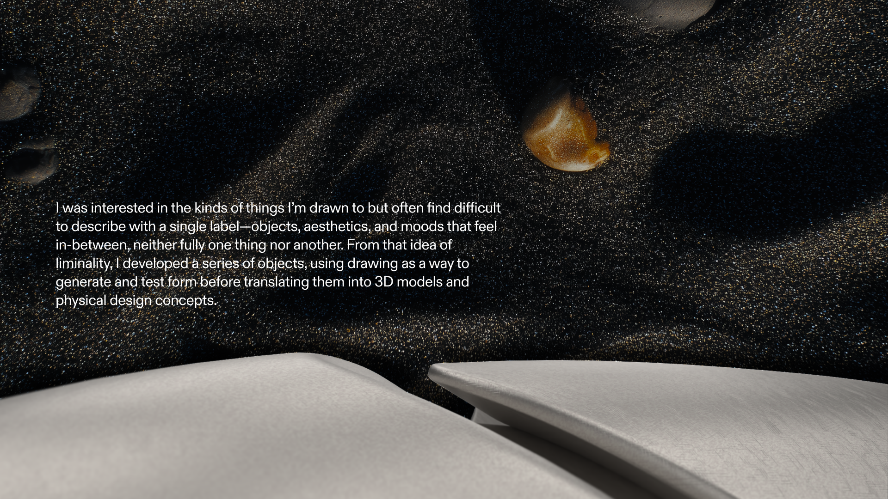
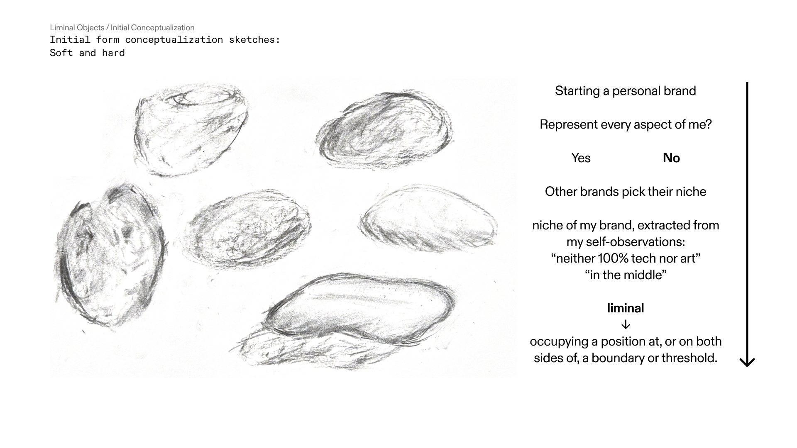
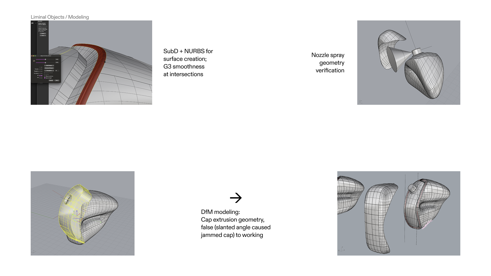

Created as the final project for an open-ended Drawing for Designers & Engineers course, the project treats drawing less as an end in itself and more as a tool for observation, ideation, and form-finding. A personal world view is explored here, which is ultimately expressed in a designed object.




